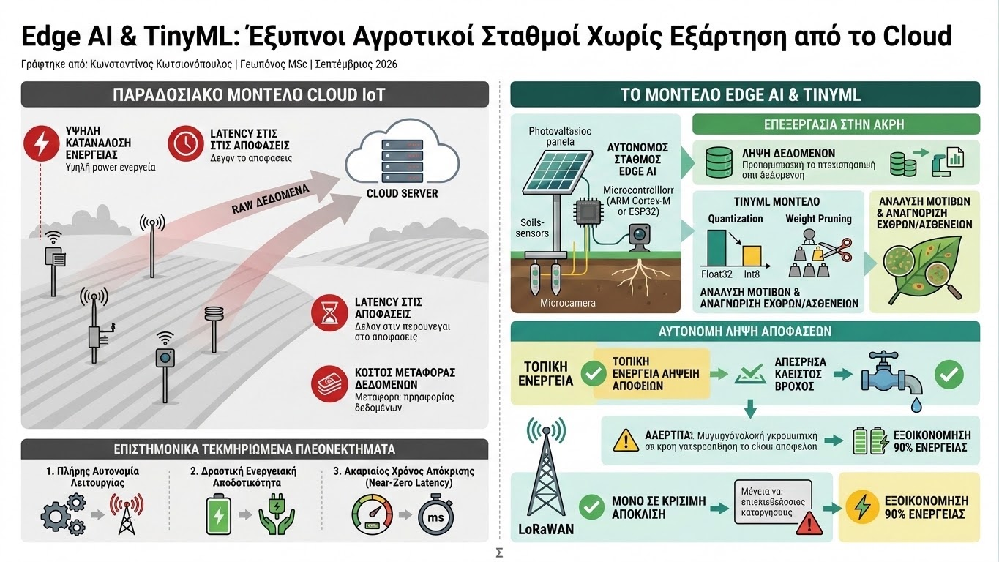

Η εξέλιξη του Internet of Things (IoT) στον πρωτογενή τομέα στηρίχθηκε κατά βάση στη συγκέντρωση ανεπεξέργαστων μετρήσεων πεδίου και την αποστολή τους σε κεντρικούς διακομιστές (Cloud). Εντούτοις, σε απομακρυσμένες αγροτικές περιοχές με ασθενές ή ανύπαρκτο σήμα κινητής τηλεφωνίας, το μοντέλο αυτό εμφανίζει σοβαρούς περιορισμούς: υψηλή κατανάλωση ενέργειας κατά την εκπομπή, latency στις αποφάσεις και σημαντικό κόστος μεταφοράς δεδομένων. Η τεχνολογική λύση που μετασχηματίζει τη Γεωργία 5.0 είναι η Επεξεργασία στην Άκρη (Edge Computing) και η Μικροσκοπική Μηχανική Μάθηση (TinyML).
Το TinyML επιτρέπει την εκτέλεση προεκπαιδευμένων νευρωνικών δικτύων απευθείας πάνω σε μικροελεγκτές χαμηλού κόστους και κατανάλωσης ισχύος κάτω του milliwatt (όπως επεξεργαστές ARM Cortex-M ή ESP32). Μέσω τεχνικών βελτιστοποίησης μοντέλων, όπως η κβαντοποίηση (quantization) από floating-point 32-bit σε int8 και το κλάδεμα βαρών (weight pruning), πολύπλοκοι αλγόριθμοι συμπιέζονται σε μερικές εκατοντάδες kilobytes μνήμης RAM, χωρίς αξιοσημείωτη απώλεια ακρίβειας.

Στην πράξη, ένας αυτόνομος σταθμός Edge AI εξοπλισμένος με φωτοβολταϊκό πάνελ και αισθητήρες εδάφους ή μικροκάμερα δεν στέλνει συνεχώς δεδομένα στο δίκτυο. Αντίθετα, εκτελεί την ανάλυση τοπικά: αναγνωρίζει μοτίβα υδατικού ελλείμματος, υπολογίζει την πραγματική εξατμισοδιαπνοή ή εντοπίζει τα πρώιμα συμπτώματα μυκητολογικών προσβολών απευθείας στο φύλλο. Μόνο όταν διαπιστωθεί κρίσιμη απόκλιση ή ενεργοποιηθεί συναγερμός, η συσκευή εκπέμπει ένα ελαφρύ πακέτο ειδοποίησης μέσω LoRaWAN, εξοικονομώντας έως και 90% της ενέργειας της μπαταρίας.
Τα επιστημονικά τεκμηριωμένα πλεονεκτήματα του Edge AI στη βιώσιμη γεωργία περιλαμβάνουν:
- Πλήρης Αυτονομία Λειτουργίας: Δυνατότητα λήψης αποφάσεων κλειστού βρόχου (π.χ. άμεσο άνοιγμα ηλεκτροβάνας σε περίπτωση ραγδαίας πτώσης υδατικού δυναμικού) ακόμα και σε πλήρη διακοπή των τηλεπικοινωνιών.
- Δραστική Ενεργειακή Αποδοτικότητα: Η τοπική επεξεργασία καταναλώνει κλάσμα της ενέργειας που απαιτείται για τη συνεχή ραδιοεκπομπή raw δεδομένων, επιτρέποντας πολυετή λειτουργία με μια μικρή μπαταρία.
- Ακαριαίος Χρόνος Απόκρισης (Near-Zero Latency): Εφαρμογές όπως ο ψεκασμός ζιζανίων ακριβείας σε κινούμενες πλατφόρμες ή η ανίχνευση δονήσεων από έντομα απαιτούν αποφάσεις σε χιλιοστά του δευτερολέπτου, κάτι που καθιστά το Cloud ανεπαρκές.
Η σύγκλιση της γεωπονικής γνώσης με το TinyML απελευθερώνει την ψηφιακή γεωργία από τα δεσμά των τηλεπικοινωνιακών υποδομών. Μετατρέποντας κάθε αισθητήρα σε μια αυτόνομη ευφυή μονάδα, ο σύγχρονος γεωπόνος εξασφαλίζει αξιόπιστη, ανθεκτική και αποδοτική διαχείριση των φυσικών πόρων ακόμα και στις πιο απομονωμένες καλλιέργειες του πλανήτη.